Organization layout review · 0.4.2
Native Compose/Robolectric captures of the implemented layouts. These cover narrow screens, 150% text and landscape. Physical keyboard behavior, TalkBack and motion remain device checks.
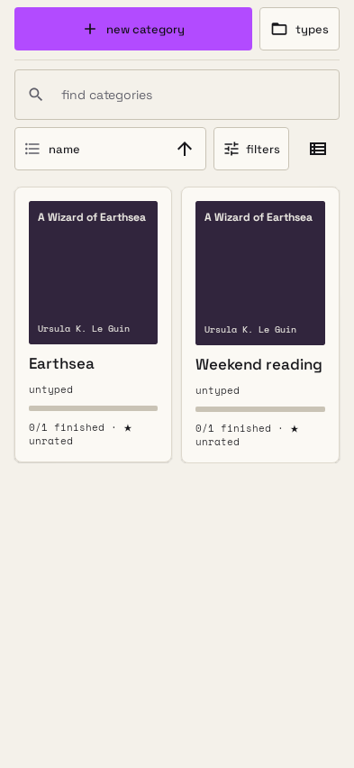
Category grid and aligned browse controls
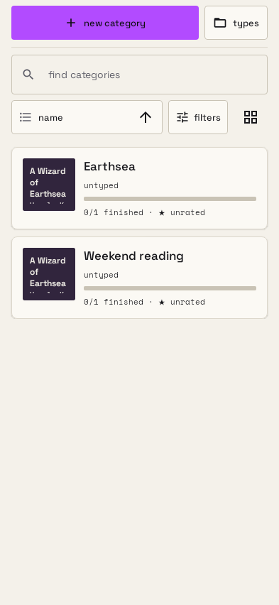
Category list and aligned action surfaces
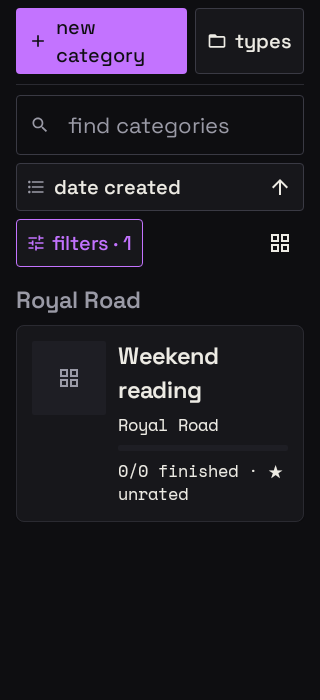
320dp width, 150% text, date-created sort and active filter
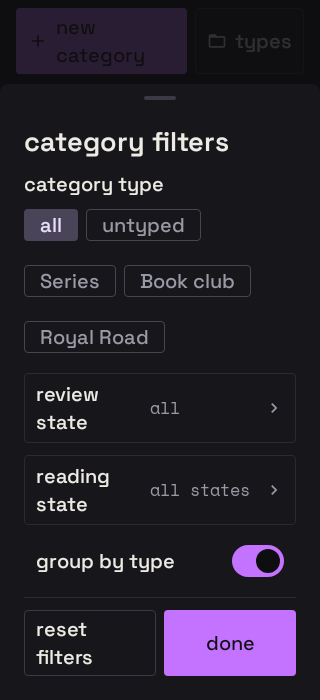
Category filters at 320dp and 150% text
Authors search and browse controls at 320dp and 150% text
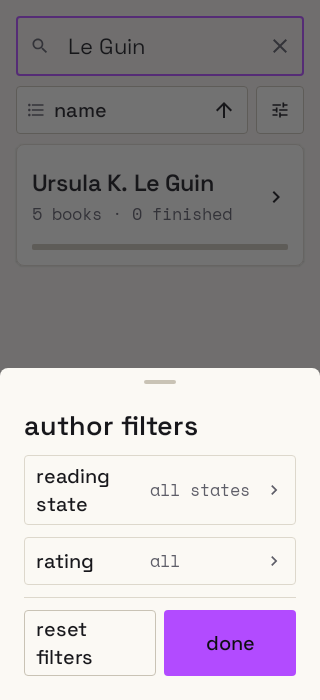
Author filters at 320dp and 150% text
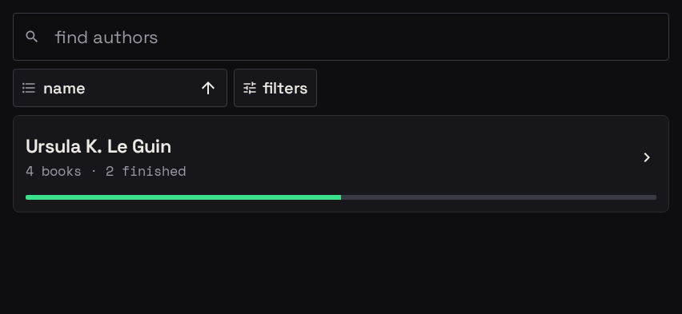
Authors in landscape at 150% text
Book picker, file-location sort and fixed confirmation at 150% text
Grouped book filters at 150% text
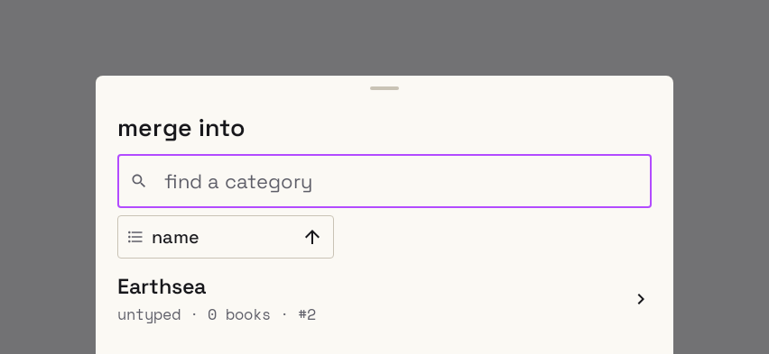
Merge target selection in landscape at 150% text
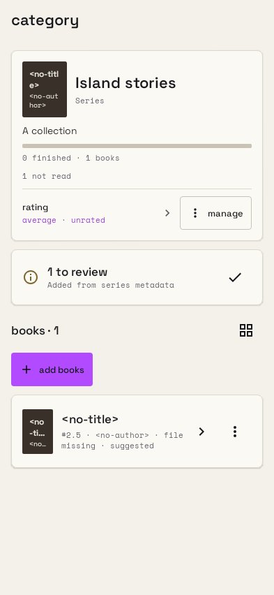
Category identity, rating summary and suggestion review
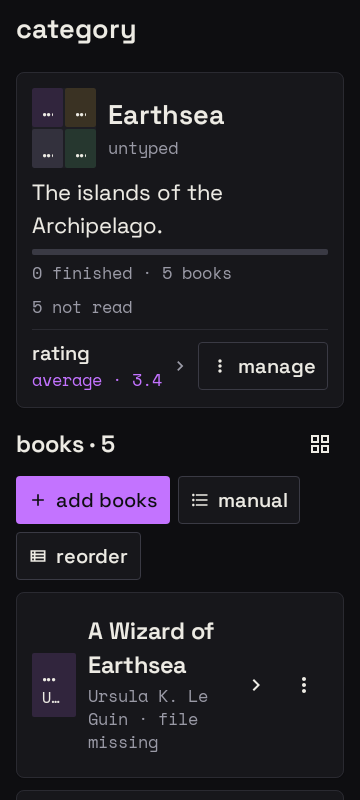
Populated category detail with exact 3.4 average at 150% text
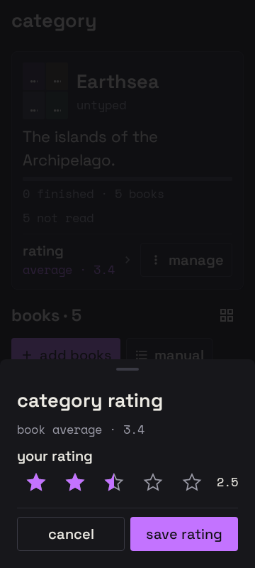
Rating draft with save and cancel at 150% text
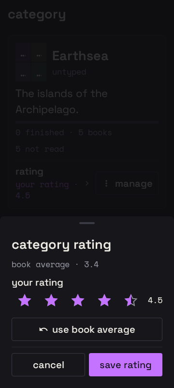
Saved half-star override and restore-average action at 150% textDevice checklist · Validation record